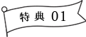
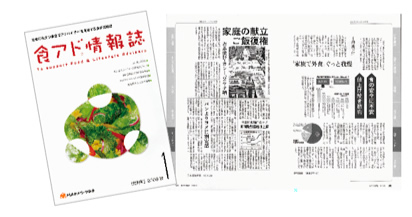
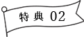
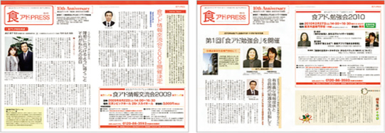
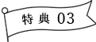
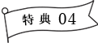
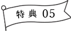
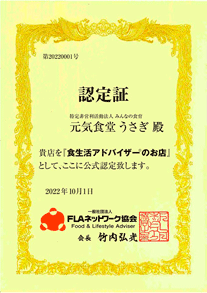

会員制度活動紹介
食生活アドバイザー®会員入会で様々な特典をご活用ください。
FLAネットワーク協会では、2008年より食生活アドバイザー®の資格を取得された皆様を入会資格とする食アド®会員制度を設け、会員皆様の活動のサポートを行っております。
- ◆入会資格…食生活アドバイザー®検定3級もしくは2級の合格者
- ◆会員期間…4月1日～ 3月31日または10月1日～ 9月30日の各1年間
- ◆年 会 費 …5,500円（1年ごとの更新）
- ◆申込方法…合格通知に同封されている入会申込用の振込用紙に必要事項をご記入いただき、年会費をお振込ください。
各会員期間には申込期限日が設定されております。また、過去に合格された方、途中入会をご希望の方などいらっしゃいましたら、FLAネットワーク協会までお問い合わせください。 - ◆入会特典…下記、詳細内容をごらんください。
FLAネットワーク協会より『食アド®情報誌』をお届けします。（年2回）
FLAネットワーク協会では、食生活アドバイザー®としてご活躍される会員の皆様へのバックアップサポートとして、有益情報をお届けします。その一環として食生活アドバイザー®の活動ステージや「食と生活」にまつわる新聞記事などをまとめた『食アド®情報誌』を年に2回お届けいたします。

FLAネットワーク協会より『食アド®PRESS』をお届けします。（年4回）
さらなるバックアップサポートとして、食生活アドバイザー®のネットワークを活かした『食アド®PRESS』をお届けします。
これからいかに「食」ビジネスのうえで食生活アドバイザー®が求められていくかなど、会員の皆様にとって有益な情報をご提供いたします。

FLAネットワーク協会が主催する『食アド®ゼミナール』にご参加いただけます。
食アド®会員様のスキルアップやブラッシュアップの場をご提供。
FLAネットワーク協会の情報事業、「窓口問屋制度」の一環として「食アド®ゼミナール」を開催しております。
「食アド®」としての知識を育成・向上するための機会をご活用ください。
FLAネットワーク協会が主催する『食アド®Academy』にご参加いただけます。
食生活アドバイザー®資格を取得した方が、さらにその知識を実践的に活用できるよう、よりアカデミックな情報や手法を提供いたします。
情報交流会や勉強会に継ぐリアルな学習の場で、スキルのブラッシュアップを図るために是非ご活用ください。
会員様の飲食店などを応援する『食アド®のお店』を認定します。
FLAネットワーク協会が応援する「食アド®のお店」の認定証を発行します。お店に提示などして是非ご活用ください。(提示期間は食アド®会員期間と同じく1年間、発行費用は2,200円(税込)となります)詳しくは協会事務局までお問合せください。

※画像はサンプルです。
(認定証はA4サイズです)